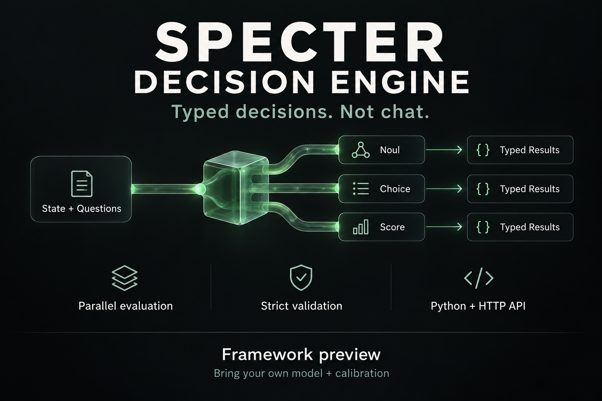

Noul
Probability of yes on a binary question, with [P(no), P(yes)].
0
1
Specter turns application state into bounded, typed numeric decisions — Noul, Choice, and Score — with explicit failures, local System-One backends and calibration hooks.
{
"id": "route",
"type": "choice",
"status": "ok",
"value": "engineering",
"probabilities": [0.05, 0.85, 0.10],
"confidence": 0.81
}The framework keeps the decision surface deliberately small. Your backend supplies finite logits; Specter validates, calibrates, projects and returns a predictable contract.
Probability of yes on a binary question, with [P(no), P(yes)].
One option from an explicit candidate set. Deterministic argmax projection.
A continuous expected level over an ordered rubric you define.
Each evaluation sees the same immutable state snapshot, not preceding answers.
Timeouts, invalid outputs and missing calibration are typed failure states.
Connect your own numeric backend and validated domain calibration.
rc5 adds a bit-mask lexical prefill path and a content-addressed cache for the local backend. The wheel also carries an optional native C prefill core while retaining a Python fallback.
Benchmark figure is the release author's rc5 measurement, not a universal latency guarantee. Real performance depends on hardware, workload and runtime.
The pinned rc5 wheel is served with this page. Create an isolated environment, install the exact artifact, then run doctor. No Git clone required.
Keep Specter isolated from your system Python.
The command below resolves to this site's pinned rc5 release artifact.
This confirms installation integrity, not model readiness.
Important: Specter 0.2.0rc5 is a prerelease framework build. Local System-One backends are included, but no doctor result certifies domain accuracy, calibration quality or production readiness.
The site publishes a concise /llms.txt entry point plus a pinned install brief. An agent gets the exact artifact, SHA-256, environment rules and doctor verification — including what it must not assume.
Shareable endpoint
Python applications can call the SDK directly. Other runtimes can integrate through the authenticated HTTP contract and OpenAPI schema.

/v1/decision/evaluate/v1/decision/capabilities/v1/decision/openapi.json